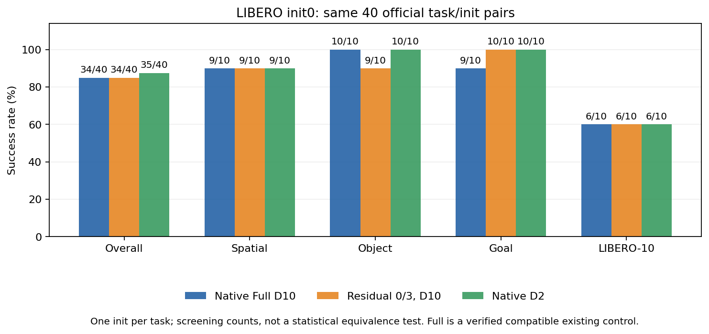
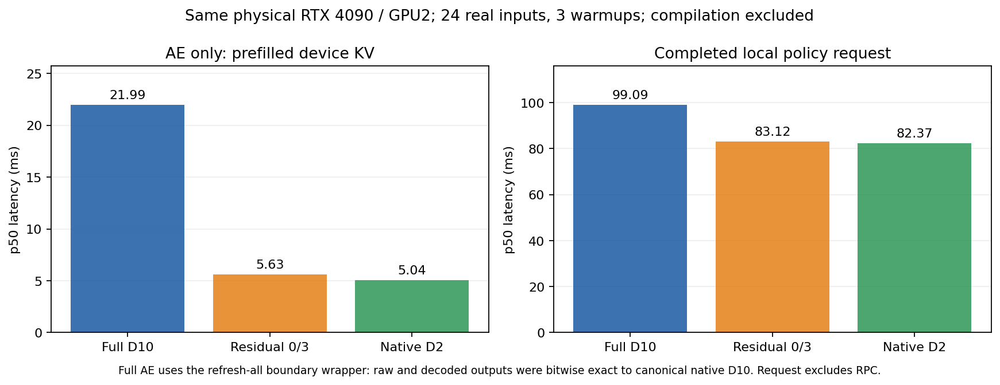
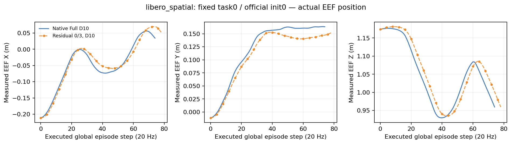
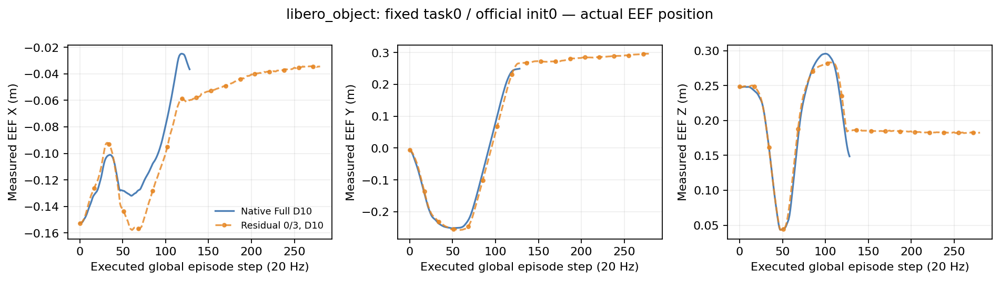
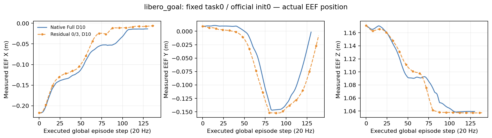
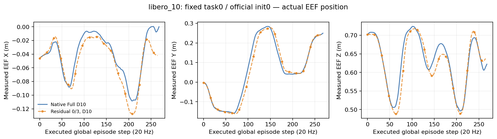

本次 40 个 init0 任务筛查中，Full 与残差复用均为 34/40（85%），额外运行的 canonical D2 为 35/40（87.5%）。残差复用确实降低 Full D10 的计算成本，但在这个小样本中没有显示优于更简单 D2 的收益，不能据此声称统计等价或泛化优势。
同一加载模型、相同真实输入和显式噪声，24 个输入覆盖四个 suite。关闭复用、每步刷新时，raw 和 decoded 输出对 canonical native D10 全部逐位相同；canonical Policy.infer 对照以及 native D2 对照均通过。实际计数为 10 次 Euler 更新、2 次 Transformer 刷新，时间从 1 到约 0（FP32 尾差 −7.45e−8）；穿插其他请求后重复请求的输出差为 0。
缓存精确定义为：18 层 AE Transformer 扫描结束、最终 RMSNorm 之前的输出，减去当步已转 BF16 的 suffix 输入，差值以 FP32 保存。只在更新索引 0、3 运行完整 Transformer。每一步重新计算当前 noisy action、state、time 的 suffix embedding，随后使用当前 embedding 加缓存残差，再重新运行最终 RMSNorm 和 action head；不缓存 velocity。每次请求都重新计算完整图像/VLM prefix，缓存只存在于当次请求内。此次实际验证对象为 pi0。
| 条件 | 总体 | Spatial | Object | Goal | LIBERO-10 |
|---|---|---|---|---|---|
| Native Full D10 | 34/40 | 9/10 | 10/10 | 9/10 | 6/10 |
| Residual 0/3, D10 | 34/40 | 9/10 | 9/10 | 10/10 | 6/10 |
| Native D2 | 35/40 | 9/10 | 10/10 | 10/10 | 6/10 |


同一物理 GPU2（RTX 4090）交错测量，24 个真实输入、每条件 3 次 warmup，排除编译。p50 完成本地请求：Full 99.09ms、残差 83.12ms、D2 82.37ms；残差相对 Full 下降 16.1%（1.192×）。AE 单独阶段：严格数值匹配的 Full wrapper 21.99ms、残差 5.63ms、D2 5.04ms，残差下降 74.4%（3.905×）。请求边界包含预处理、全新 prefix、GPU 完成及 decode，排除 RPC；AE 边界使用已准备的设备 KV。历史 Full 成功率控制的运行时间没有被用于端到端加速结论。
Full 是已有兼容的 40 任务控制。新残差 40 次与额外 D2 40 次均核对了官方 init、BDDL、controller、20Hz、H50/R5、checkpoint 身份、native 源码及首请求噪声/seed；80 个新 episode 的首观测 hash 均与对应 Full 完全相同。D2 是本次追加控制，不是历史数据。四个 suite 各 10 个 task，均只使用官方 init0。
{
"full_vs_reuse03": {
"both_success": 31,
"left_only": 3,
"right_only": 3,
"both_failure": 3
},
"full_vs_d2": {
"both_success": 32,
"left_only": 2,
"right_only": 3,
"both_failure": 3
},
"reuse03_vs_d2": {
"both_success": 33,
"left_only": 1,
"right_only": 2,
"both_failure": 4
}
}下列 final/furthest 阶段是基于接触、抓取及位置等证据的启发式标签；同时列出“Full 成功而候选失败”子集，不能解释为因果失败诊断。
{
"reuse03": {
"failed_final_phase_counts": {
"goal_alignment": 3,
"transport": 2,
"approach": 1
},
"failed_furthest_phase_counts": {
"release_or_final_action": 3,
"goal_alignment": 2,
"approach": 1
},
"full_success_candidate_failure_final_phase_counts": {
"goal_alignment": 2,
"transport": 1
},
"full_success_candidate_failure_furthest_phase_counts": {
"release_or_final_action": 3
},
"full_success_candidate_failure_episodes": [
{
"suite": "libero_10",
"task": 4,
"init": 0,
"final": "goal_alignment",
"furthest": "release_or_final_action"
},
{
"suite": "libero_10",
"task": 6,
"init": 0,
"final": "goal_alignment",
"furthest": "release_or_final_action"
},
{
"suite": "libero_object",
"task": 0,
"init": 0,
"final": "transport",
"furthest": "release_or_final_action"
}
],
"initial_observation_hash_matches": 40,
"measured_eef_post_actions1to5_mean_episode_l2_mm": 2.114210738482313,
"measured_eef_initial_through5_mean_episode_l2_mm": 1.7618422820685944,
"measured_eef_all_equal_steps_mean_episode_l2_mm": 47.82170558875936,
"selected_videos": [
"results/idea1_v3_2/e2_quality/even/reuse03/libero_10/task00/init00/video.mp4",
"results/idea1_v3_2/e2_quality/even/reuse03/libero_goal/task00/init00/video.mp4",
"results/idea1_v3_2/e2_quality/even/reuse03/libero_object/task00/init00/video.mp4",
"results/idea1_v3_2/e2_quality/even/reuse03/libero_spatial/task00/init00/video.mp4"
]
},
"d2": {
"failed_final_phase_counts": {
"goal_alignment": 2,
"transport": 2,
"approach": 1
},
"failed_furthest_phase_counts": {
"release_or_final_action": 1,
"transport": 1,
"grasp_or_manipulate": 1,
"goal_alignment": 2
},
"full_success_candidate_failure_final_phase_counts": {
"goal_alignment": 1,
"transport": 1
},
"full_success_candidate_failure_furthest_phase_counts": {
"release_or_final_action": 1,
"goal_alignment": 1
},
"full_success_candidate_failure_episodes": [
{
"suite": "libero_10",
"task": 6,
"init": 0,
"final": "goal_alignment",
"furthest": "release_or_final_action"
},
{
"suite": "libero_10",
"task": 5,
"init": 0,
"final": "transport",
"furthest": "goal_alignment"
}
],
"initial_observation_hash_matches": 40,
"measured_eef_post_actions1to5_mean_episode_l2_mm": 1.844123611448623,
"measured_eef_initial_through5_mean_episode_l2_mm": 1.5367696762071856,
"measured_eef_all_equal_steps_mean_episode_l2_mm": 40.97461491170056,
"selected_videos": [
"results/idea1_v3_2/e2_quality_d2/even/d2/libero_10/task00/init00/video.mp4",
"results/idea1_v3_2/e2_quality_d2/even/d2/libero_goal/task00/init00/video.mp4",
"results/idea1_v3_2/e2_quality_d2/even/d2/libero_object/task00/init00/video.mp4",
"results/idea1_v3_2/e2_quality_d2/even/d2/libero_spatial/task00/init00/video.mp4"
]
}
}
残差相对 Full 的真实 EEF 位置差：每个 episode 刚开始执行的全局步骤 1–5，平均 episode L2 为 2.114mm。它只覆盖 episode 开头的五步，不是每次 replan 的未来 1–5 offset，也不能说明后期接触/精细阶段的安全性。包含初始状态的 0–5 六个样本为 1.762mm，已分开保存。全程按相同步数对齐的平均 episode L2 为 47.822mm，包含路线、节奏和闭环累积的差异，不是相同观测下的动作误差，也不是 Full 驱动的 shadow 对照。控制器命令保留原始 7 维单位，单独统计，未当作 XYZ 位移。




固定选择各 suite 的 task0/init0；Full 蓝线、残差橙色虚线和标记。八个新视频均通过完整 ffmpeg decode 检查，索引另含四个已有 Full 视频。
| 任务 | Full | Residual | D2 |
|---|---|---|---|
| libero_spatial task0/init0 | Native Full D10 成功 | Residual 0/3, D10 成功 | Native D2 成功 |
| libero_object task0/init0 | Native Full D10 成功 | Residual 0/3, D10 失败 | Native D2 成功 |
| libero_goal task0/init0 | Native Full D10 成功 | Residual 0/3, D10 成功 | Native D2 成功 |
| libero_10 task0/init0 | Native Full D10 成功 | Residual 0/3, D10 成功 | Native D2 成功 |
汇总 JSON · 实际模型 gate / 时延 · 残差 40 对 · D2 40 对 · 视频 hash 索引
时间预算以约 04:10 UTC 准备开始计，截止 05:40 UTC；GPU 实验于 04:42:04 已清理并释放，随后仅做 CPU 图表与报告。最初一次因 GPU host/container PID 身份未辨明而中断，独立保留为 identity uncertain，不作为质量失败。源码、输入、噪声、checkpoint 身份及结果文件 hash 均有收据；未改 native 模型源码。